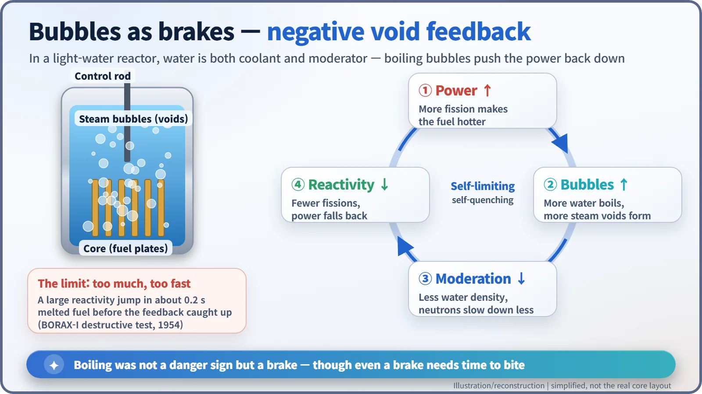
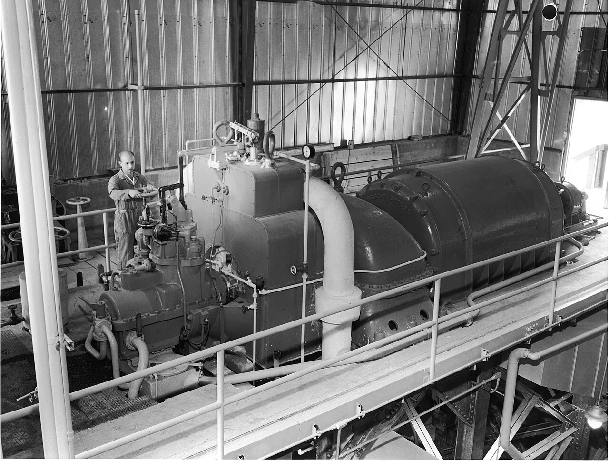
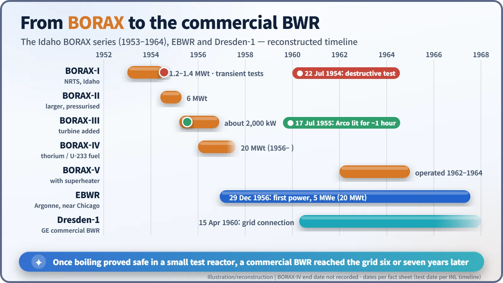

Nuclear History · 201
The Day They Broke a Reactor on Purpose — BORAX and the Birth of the Boiling Water Reactor (1953–1956)
Designers feared boiling water in a reactor core; a series of small Idaho test reactors, one of them destroyed on purpose, proved that steam bubbles hold the power in check.
In the early 1950s, most reactor designers believed water must never boil inside a reactor core. At a test site in the Idaho desert, Argonne's BORAX experiments showed the opposite: steam bubbles act as a built-in brake. In July 1954 the team even destroyed BORAX-I on purpose to find the brake's limit, and within six years a commercial boiling water reactor was feeding the grid.
"Don't let the water boil"
In the early 1950s, that was close to common sense among reactor designers. Boiling water fills the core with steam bubbles that form and collapse unpredictably, and the fear was that this jittery froth would make the chain reaction just as jittery. Water-cooled reactors, the thinking went, should be kept under enough pressure that they never boil at all.
Samuel Untermyer II (1912–2001), a physicist at Argonne National Laboratory, turned the argument on its head. Around 1952 he suggested that the bubbles might actually calm a reactor down. There was no point debating it on paper. The obvious thing to do was to boil some water and see. [3] [5]
A water tank in a mound of earth
The stage was the National Reactor Testing Station (NRTS) in the high desert of eastern Idaho, today's Idaho National Laboratory. In 1953 an Argonne team built BORAX-I there, not far from the experimental reactor EBR-I. The name stood for BOiling ReActor eXperiment.
It was a modest affair: a tank of water with fuel plates inside, banked up with earth, and no building over it. Sources give its thermal power as about 1.2 to 1.4 megawatts, a few thousandths of a modern large power reactor.
From a control point well away from the reactor, the team ran test after test in which control rods were pulled out suddenly to trigger a "power excursion" — in effect, deliberately startling the reactor. Each time, the power shot up, the water boiled, bubbles formed, and the bubbles pulled the power back down. In the words quoted by the American Nuclear Society, "the reactor was quite stable under most operative schemes." [1]
Why bubbles act like brakes
The secret lies in the two jobs that water does in this kind of reactor. It is the coolant that carries heat away, and it is also the moderator that slows down the fast neutrons released by fission. Uranium-235 splits far more readily when it is hit by a slow neutron.
When the water boils and fills with bubbles, there is less water in the core. With fewer water molecules to slow the neutrons, fewer fissions happen and the power falls. The harder the reactor pushes, the harder it brakes itself. Engineers call this a negative void coefficient of reactivity — "void" simply meaning the space where water has turned to steam.

July 1954: the last test, planned from the start
How far could that brake be trusted? The team planned the final BORAX-I test from the outset as one that would destroy the reactor. Idaho National Laboratory's timeline dates it to 22 July 1954; an attempt the day before had reportedly been called off because the wind was blowing the wrong way.
Four of the five control rods were withdrawn to bring the reactor just critical at very low power. Then the fifth was fired out by a spring in about 0.2 seconds. The result was far more violent than predicted. Much of the metal fuel melted, and when molten fuel met water, a sudden steam explosion blew the core apart. This was not a nuclear explosion like a bomb's; it was the pressure of water flashing into steam almost instantly. Fuel fragments landed 60 to 90 metres (200 to 300 feet) away, radiation readings rose about 800 metres (half a mile) away, and staff were evacuated for roughly half an hour. The debris was buried nearby, and the site is still kept under a protective cap. [5]
Yet the test was not counted as a failure. The 1963 Atomic Energy Deskbook wrote that "the experiment dramatically confirmed the self-quenching characteristic of steam void formation." The power burst was over in a few thousandths of a second. The test also exposed the limit: put in too much reactivity too quickly, and the fuel is damaged before the brake can bite. [1]
A town switches on
In 1954 a larger, pressurised BORAX-II (6 megawatts thermal) followed, and adding a steam turbine to that design produced BORAX-III.
On 17 July 1955, BORAX-III carried the entire electricity supply of the nearby town of Arco for about an hour. Of roughly 2,000 kilowatts generated, 500 kilowatts went to the town, home to about a thousand people (961 in the 1950 census). On 12 August the US Atomic Energy Commission announced Arco as "the first community in the Nation to receive its entire supply of power from a nuclear source." The story is often retold as a world first, but the original claim was a national one — and the first reactor to make usable electricity was EBR-I, back in 1951. [2] [3] [5]

From a mound of earth to a power station
After the destructive test, Walter H. Zinn (1906–2000), Argonne's first director, and his colleagues planned a reactor that could run for long periods at higher pressure. The Experimental Boiling Water Reactor (EBWR), built at Argonne's Lemont site near Chicago, went critical on 1 December 1956 and produced its first electricity, 5 megawatts, on 29 December. The BORAX line itself continued with BORAX-IV (1956, 20 megawatts thermal), which tested thorium fuel, and BORAX-V (operated 1962–1964), which had a superheater. [1] [4]
General Electric turned this lineage into a product. On 15 April 1960, GE's Dresden Unit 1 boiling water reactor was connected to the grid, and the BWR went on to become, alongside the pressurized water reactor, one of the two pillars of light-water nuclear power.

The day a reactor was broken on purpose was not a reckless gamble but a measured answer to the question "how safe is safe?" Boiling water turned out to be a brake rather than an enemy — and the same test showed that even a brake needs a moment to work.